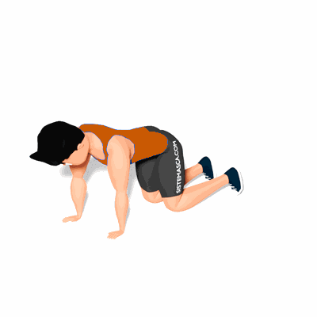

Elevação Lateral de Pernas Sobre 4 Apoios

Exercício para fortalecimento da região dos glúteos. Ele trabalha também a estabilização e flexibilidade do corpo.
Ficha Técnica
Tipo: Musculação
Grupo Muscular: Glúteo
Aparelho: Nenhum
Músculos: Nenhum
Como realizar
- Fique sobre quatro apoios, manter as costas retas e o abdômen para dentro;
- Levante lentamente o joelho pela lateral até o nível das costas;
- Mantenha a perna nessa posição por alguns segundos, solte o ar e volte para a posição inicial. Em seguida, repita o movimento com a outra perna.
 RC STORE
RC STORE